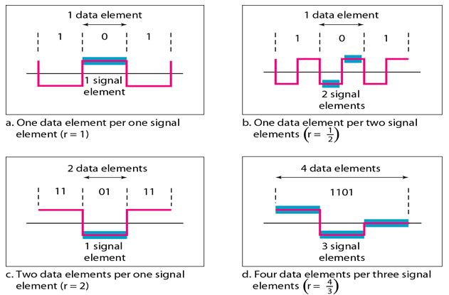

Introduction
Introduction Communication/transmission of data from sender to receiver takes place in a computer network. Analog/digital data traverses through communication media from source to destination in form of signals. The transmitting signals may undergo attenuation and distortion as they travel over large distances. Therefore there is a need to match the properties of transmitted signal as per the communication media for which digital data can be converted into digital signals.
Line encoding
The process of converting digital data into digital signals is referred as Line Encoding. With the help of line encoding schemes, a sequence of bits are converted into digital signal(encoding) which then get converted back into bits at the receiver end (decoding).Characteristics of Line coding
Signal Element versus Data Element:
A data element is the smallest entity that can represent a piece of information. This is the bit. In digital data communications, a signal element carries data elements. A signal element is the shortest unit (time wise) of a digital signal. In other words, data elements are what we need to send; signal elements are what we can send. Data elements are being carried; signal elements are the carriers.
We define a ratio r which is the number of data elements carried by each signal element. Fig.1 shows several situations with different values of r.

Fig. 1 Signal element versus data element
-
Bit Rate versus Baud Rate:
The data rate defines the number of data elements (bits) sent in 1s. The unit is bits per second (bps). The baud rate is the number of signal elements sent in 1s. The unit is the baud. The bit rate is sometimes called the data rate; the baud rate is sometimes called the pulse rate, the modulation rate, or the signal rate.
One goal in data communications is to increase the bit rate while decreasing the baud rate. Increasing the bit rate increases the speed of transmission; decreasing the baud rate decreases the bandwidth requirement.
-
Bandwidth:
Digital signal that carries information is non-periodic. The bandwidth of a non-periodic signal is continuous with an infinite range. However, most digital signals we encounter in real life have a bandwidth with finite values. In other words, the bandwidth is theoretically infinite, but many of the components have such a small amplitude that they can be ignored. The effective bandwidth is finite.
-
DC Components:
When the voltage level in a digital signal is constant for a while, the spectrum creates very low frequencies. These frequencies around zero, called DC (direct-current) components, present problems for a system that cannot pass low frequencies or a system that uses electrical coupling (via a transformer).
-
Self-synchronization:
To correctly interpret the signals received from the sender, the receiver's bit intervals must correspond exactly to the sender's bit intervals. If the receiver clock is faster or slower, the bit intervals are not matched and the receiver might misinterpret the signals. Fig. 2 shows a situation in which the receiver has a shorter bit duration. The sender sends 10110001, while the receiver receives 110111000011.
A self-synchronizing digital signal includes timing information in the data being transmitted. This can be achieved if there are transitions in the signal that alert the receiver to the beginning, middle, or end of the pulse. If the receiver's clock is out of synchronization, these points can reset the clock.
Types of Line Coding
- Unipolar (eg. Unipolar RZ).
- Polar (eg. NRZ-L, NRZ-I, RZ, and Bi-phase – Manchester and differential Manchester).
- Bipolar (eg. AMI and Pseudoternary).
Unipolar Encoding
In Unipolar Encoding, '1' is considered as a high voltage and '0' is considered as a zero voltage. In this waveform will have single polarity (positive).- Unipolar RZ
Low volt is assigned for logical 0 bit and for logical 1 it returns to zero in the middle of the bit. 1 : positive-to-zero, 0 : zero.
Example: Data = 010010
Advantages
- It is simpler and inexpensive to implement.
Disadvantages
- Presence of DC Component.
- Long sequences of zeros can cause loss of synchronization at the receiver.
Polar Encoding
Polar encoding is an encoding scheme that uses two voltage levels: one is positive, and another is negative. By using two voltage levels, an average voltage level is reduced, and the DC component problem of unipolar encoding scheme is alleviated.- NRZ
NRZ stands for Non-return zero. In NRZ encoding, the level of the signal can be represented either positive or negative. The two most common methods used in NRZ are: - NRZ-L : In NRZ-L encoding, the level of the signal depends on the type of the bit that it represents. If a bit is 0 or 1, then their voltages will be positive and negative respectively. Therefore, we can say that the level of the signal is dependent on the state of the bit.
- NRZ-I : NRZ-I is an inversion of the voltage level that represents 1 bit. In the NRZ-I encoding scheme, a transition occurs between the positive and negative voltage that represents 1 bit. In this scheme, 0 bit represents no change and 1 bit represents a change in voltage level.
- NRZ-L and NRZ-I both have a DC component problem.
- The synchronization problem also exists in both schemes.
- RZ
RZ stands for Return to zero. It is an encoding scheme that provides three values, positive voltage represents 1, the negative voltage represents 0, and zero voltage represents none. In RZ scheme, 1 bit is represented by positive-to-zero and 0 bit is represented by negative-to-zero.
Example: Data = 0101
- No DC component.
- It performs two signal changes to encode one bit that acquires more bandwidth.
- It is complex as it uses three levels of voltage.
- Biphase
Biphase is an encoding scheme in which signal changes at the middle of the bit interval but does not return to zero. Biphase encoding is implemented in two different ways: - Manchester : It changes the signal at the middle of the bit interval but does not return to zero for synchronization. In this encoding, a negative-to-positive transition represents binary 1, and positive-to-negative transition represents 0. It has the same level of synchronization as RZ scheme except that it has two levels of amplitude. It is somewhat combination of the RZ (transition at the middle of the bit) and NRZ-L schemes.
- Differential Manchester : It combines the idea of RZ and NRZ-I. If the next bit is 0, transition will occur but if the next bit is 1 , no transition will occur.
- There is no DC component because each bit has a positive and negative voltage contribution.
- Manchester encoding’s main advantage is signal synchronization.
- The minimum bandwidth of Manchester and differential Manchester is twice that of NRZ.
Example: Data = 01001110
Disadvantages
Advantages
Disadvantages
Example: Data = 010000
Advantages
Disadvantages
Bipolar Encoding
Bipolar encoding scheme represents three voltage levels: positive, negative, and zero. In Bipolar encoding scheme, zero level represents binary 0, and binary 1 is represented by alternating positive and negative voltages. If the first 1 bit is represented by positive amplitude, then the second 1 bit is represented by negative voltage, third 1 bit is represented by the positive amplitude and so on. This alternation can also occur even when the 1 bits are not consecutive.Bipolar can be classified as:
- AMI : AMI stands for alternate mark inversion where mark work comes from telegraphy which means 1. So, it can be redefined as alternate 1 inversion. In Bipolar AMI encoding scheme, 0 bit is represented by zero level and 1 bit is represented by alternating positive and negative voltages.
Advantages
- DC component is zero.
- Sequence of 1s bits are synchronized.
Disadvantages
- This encoding scheme does not ensure the synchronization of a long string of 0s bits.
- Pseudoternary : It is similar to AMI with slight difference that alternating positive and negative is used for binary 0 instead of binary 1.
Advantages
- No DC component.
- No loss of synchronization if a long strings of zeros.
Disadvantages
- This encoding scheme does not ensure the synchronization of a long string of 1s bits.
Example: Data = 010010